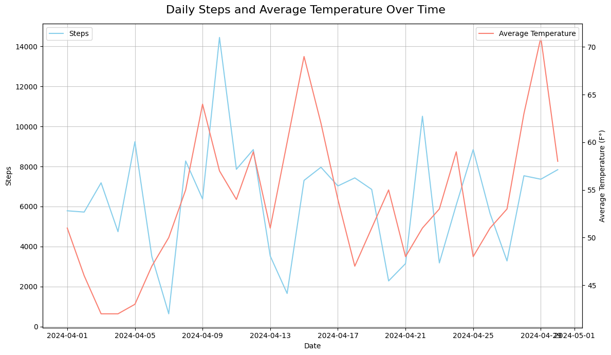
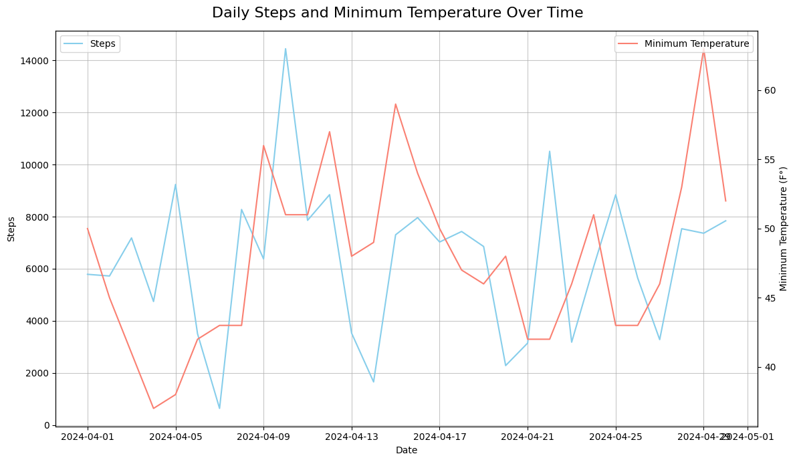
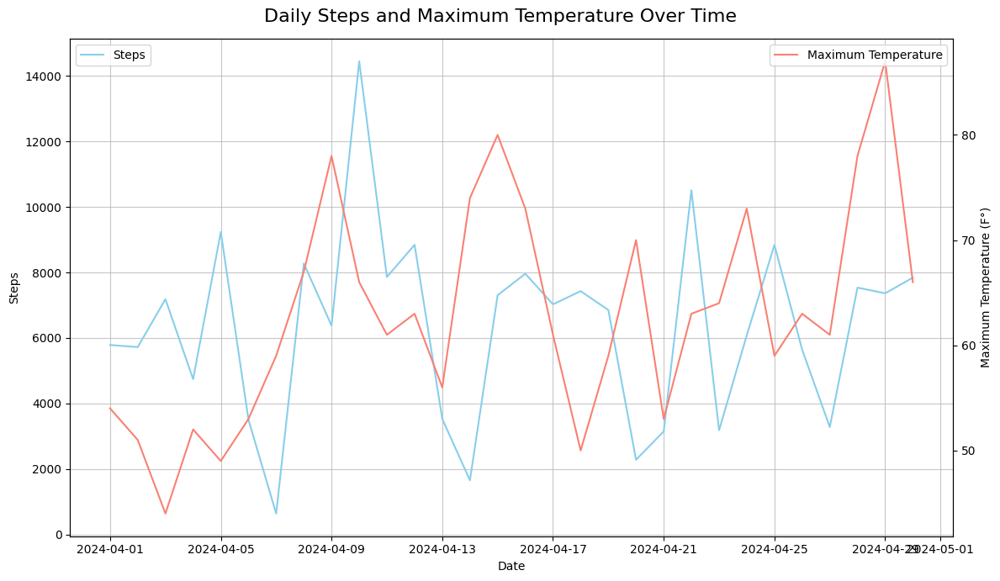
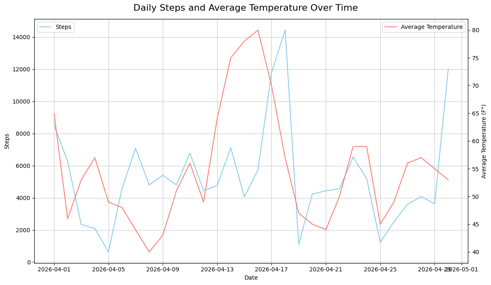
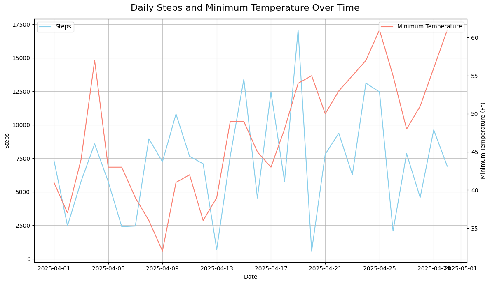
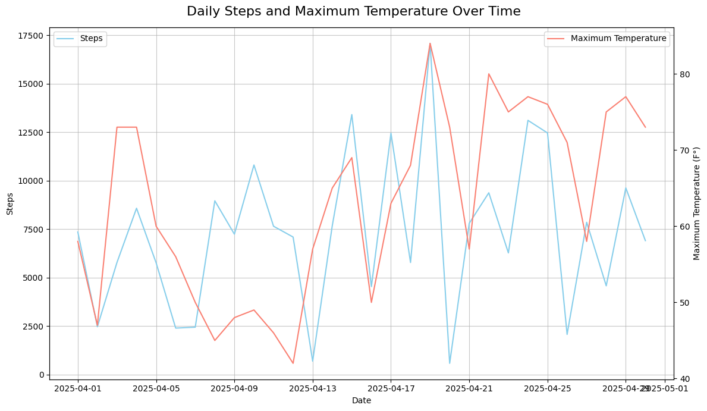
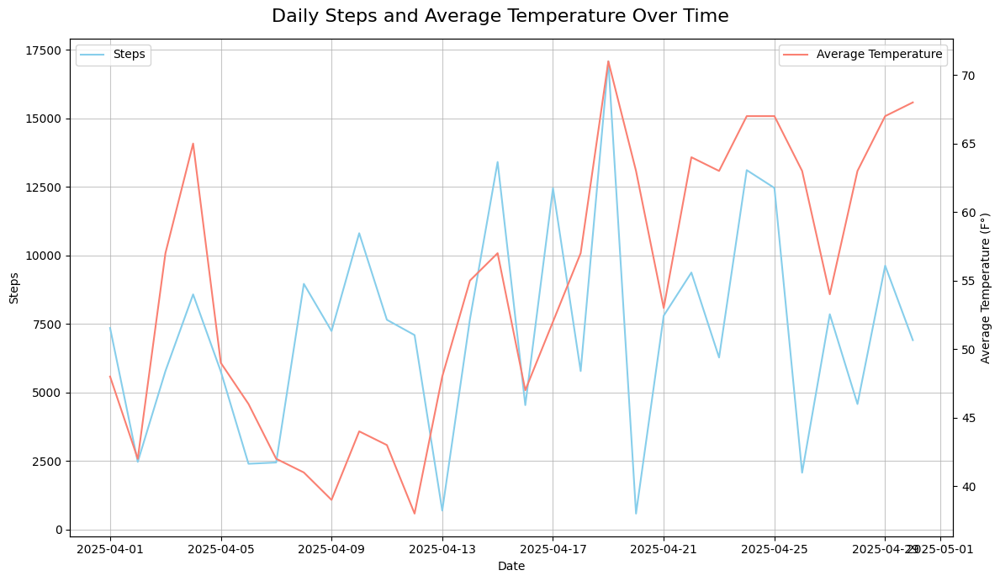
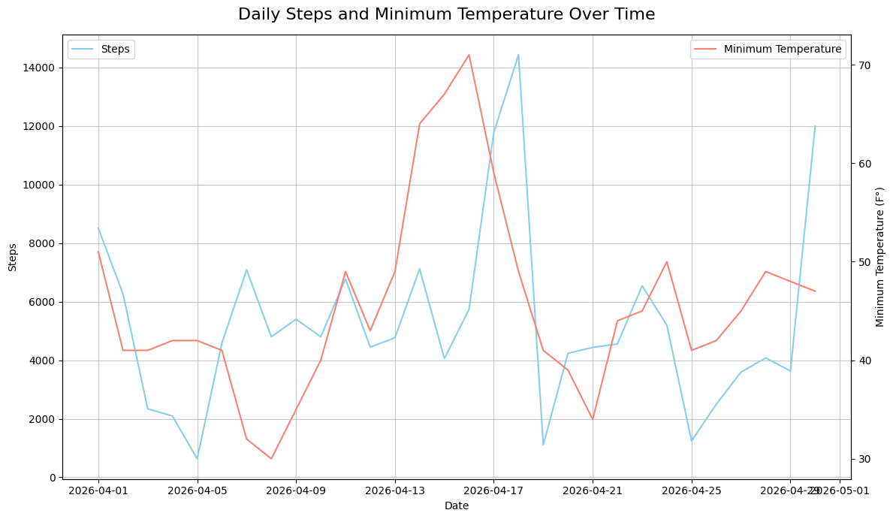
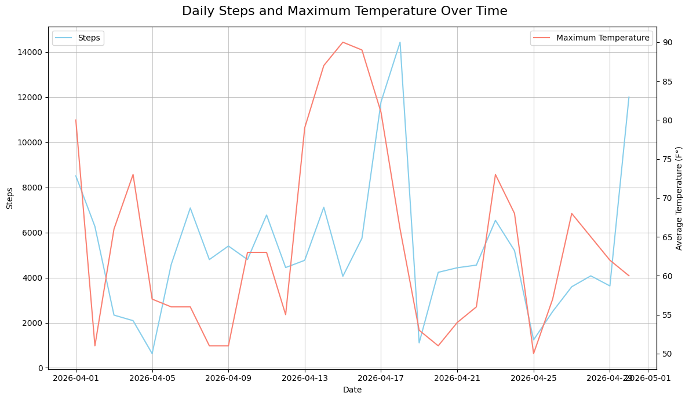

I collected three years of Apple Health daily steps data alongside temperature data, convinced that warmer weather meant more walking.
The assumption is intuitive: warm days brought me outside, cold days keep me in. So when I had three years of my own step data sitting in my iPhone Health app, I decided to actually test it against real temperature records.
I focused on April each year, the same month, same general context, different weather. I graphed daily steps against average, minimum, and maximum daily temperature for April 2024, 2025, and 2026.
April 2024 started cold, with low 40s°F in the first week, and warmed up to the low 70s by the month's end. My steps that month were all over the place. Some days I barely hit 2,000. One day, I hit nearly 15,000. Looking at the graphs, there's a loose upward trend when temperatures rise, but it's weak. The lines cross constantly.
If temperature were the main driver, you'd expect the step line to roughly follow the temperature line. Yet still, there is an evident correlation in the overall shapes of each graph



April 2025 is immediately different. Steps jumped, regularly hitting 12,000 to 17,000 per day, with fewer low-count days than in 2024.
Here's the problem with crediting weather: the temperatures in 2025 were almost identical to those in 2024. Same range, same general pattern, similar highs and lows. If temperature explained the step increase, it would look different.



April 2026 was the warmest April of the three. Temperatures regularly reached the high 70s and briefly touched 90°F, a range well above 2024 or 2025. If the weather hypothesis were correct, this would be the most active April in the dataset.
However, it wasn't. Steps fell back toward 2024 levels. Warmer temperatures did not produce more walking. At this point, temperature as the primary variable is effectively ruled out.



When I looked at what actually changed between the three years, the answer was not exclusive to the weather. My school changed its phone policy across all three years, and the step counts track that change almost perfectly.
| Year | Phone Policy at School | Avg Steps (Approx.) |
|---|---|---|
| 2024 | Phone allowed all day | ~6,500 |
| 2025 | Phone allowed half the school day | ~10,500 |
| 2026 | Phone banned the entire school day | ~5,500 |
The pattern that emerges is not what I expected going in. The partial restriction in 2025 coincided with the highest step counts, possibly because having the phone for part of the day still kept overall screen time lower than 2024, while the full ban in 2026 may have changed activity patterns in ways the step data doesn't fully capture.
There is a small, real relationship between temperature and daily steps — warmer days do tend to produce slightly more activity. But the effect is far weaker than popular intuition suggests, and it was completely overshadowed by a variable I wasn't originally measuring.
The more honest conclusion from this data is that behavioral context — specifically, how much time I spent on a phone during the day — appears to be a stronger predictor of daily step count than outdoor temperature, at least within the April temperature ranges observed here.
That's what makes data worth looking at. The answer you expect is rarely the most interesting one.